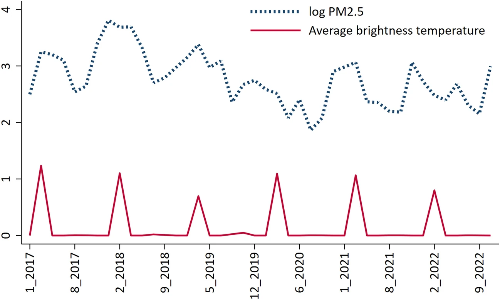

02 · Transboundary haze
Fires abroad, haze in the delta
Local pollution could track local conditions that also affect crops. So the second analysis uses pollution the delta does not make. Fire detections from 418 regions in seven neighbouring countries count only in months when the wind blows from them toward the delta, weighted by inverse squared distance. An elastic net keeps the 48 regions that predict the delta’s PM2.5.


Instrumental-variable estimates
| Outcome | Estimate | SE | AR p |
|---|---|---|---|
| NDVI | −0.169* | (0.084) | 0.026 |
| Radar vegetation index | −0.101* | (0.058) | 0.058 |
| fPAR | −0.485*** | (0.105) | < 0.001 |
| Water stress (ESI) | −1.134 | (0.898) | 0.097 |
Effect of log PM2.5 on each outcome, by two-stage least squares on 35 PM2.5 grid cells of 44 km: 562 grid-months, 535 for fPAR and ESI. First stage: 0.551*** (0.127), Kleibergen-Paap F 18.96, or 16.78 for fPAR and ESI. AR p is the Anderson-Rubin weak-instrument test, wild-bootstrapped at 44 km. Table 4. * p < 0.10, *** p < 0.01.
As a placebo, fires from the same regions in upwind months give estimates indistinguishable from zero (Supplementary Table A3).